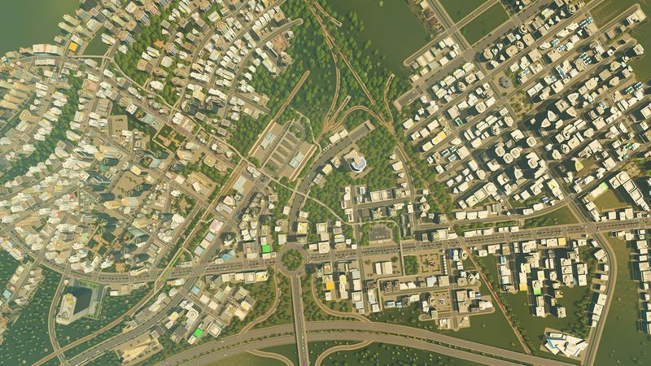
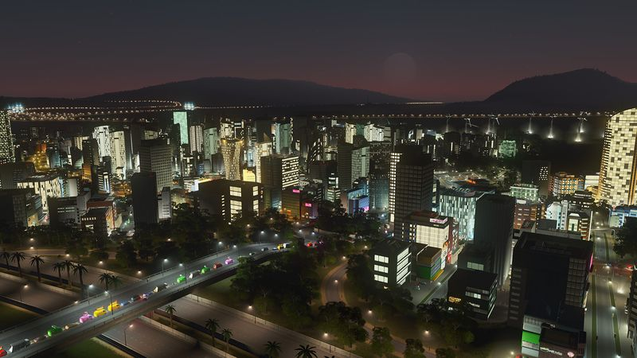

The thirty-second version
The traffic AI won. We lost.
We didn't found a metropolis. We founded a very expensive intersection.
Cities: Skylines is what happened when SimCity took a decade off and Colossal Order politely stepped in with a working game. It's endlessly moddable, it's meditative on a Sunday afternoon, and it will destroy an evening faster than any of us can fetch a beer. Ten years on it's still the one we boot up when we want to feel competent and then very quickly not.
Okay, what is this thing?
You start with a stretch of grass, one road, and the confident belief that this time you're going to plan the highway before you plop the residential zones. Two hours later you have a hospital nobody can reach, sewage flowing into your reservoir, and forty-two garbage trucks pointed the wrong way down the same street. Welcome to mayor.
What actually makes it work is the traffic simulation. Every vehicle picks a route based on the network you built, which is a beautiful idea until you realise the vehicles have been to a different school than you. That, plus mods, plus DLC across roughly a decade, means you can sculpt one map for a hundred hours and still have places you haven't zoned. It rewards patience the way a jigsaw does.


Why it escaped the group chat
- Traffic is simulated per-vehicle, which is why one bad exit ramp can grind your entire economy to a halt.
- Mod support runs deep on PC and the community fixed problems that shipped with the base game.
- You can play it entirely at 1x speed if you want to feel like a wise mayor with cheese and crackers.
Three dads enter
01
Dad Who Skipped the Tutorial
The stadium came first. So did the bankruptcy.
I plopped a stadium down in the first ten minutes because it looked cool, then ran out of money before the sewage plant. I'm not entirely convinced you can lose at Cities: Skylines, and yet, I have. Twice. I now maintain that my role is 'the aesthetics guy' while the other two handle infrastructure.
02
The Descent Guy
I made a real spreadsheet. It was tabbed.
Traffic flow, tax rates, industry zoning ratios — I built the spreadsheet before I built the first block. Then I ran a lane math simulation in Excel while the game sat paused. I'm not the reason SimCity died, but I am the reason our shared save file has three underpasses labelled 'do not touch'. It's fine. It's mostly fine.
03
Normal-ish Dad
One hour in, three have passed. Every time.
Cities: Skylines doesn't tell you it's midnight. It doesn't warn you that you've got work in the morning. It just quietly plays that ambient traffic hum while you tweak one intersection and suddenly it's tomorrow. I respect it deeply and I refuse to install it on my laptop before big meetings.
Who it is for and what to watch
Invite these people
- Anyone who wants management sim without a UI screaming at them
- People who unironically like watching cars drive
- Retirement rehearsal enthusiasts
Dad caveats
- The traffic AI is a benevolent troll
- The DLC pile is real and it is not small
- Modding on console is a different game entirely
Receipts
One of us has 200+ hours across a decade, one built a functioning port town over a fortnight, and one plopped a stadium on turn one and never recovered. Details checked against the Steam listing.